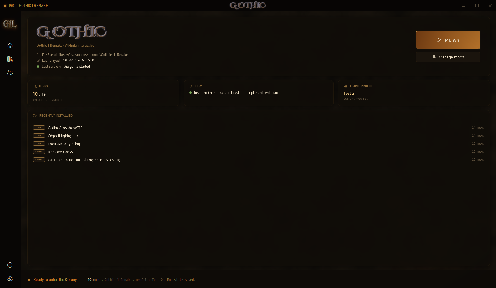
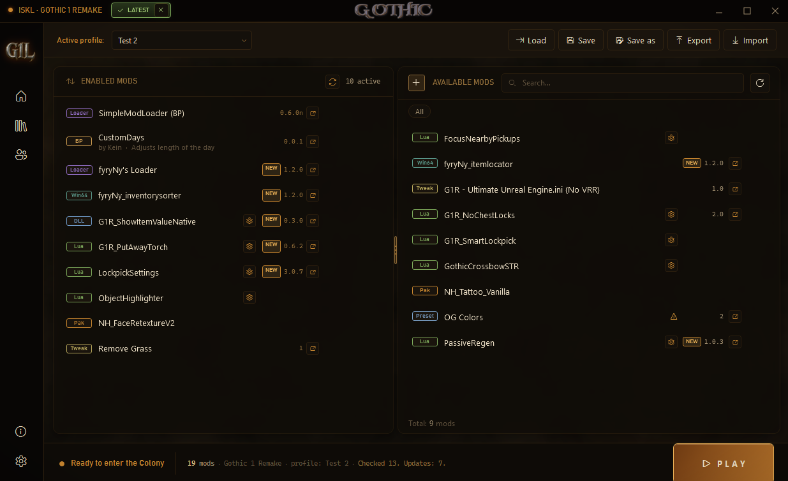
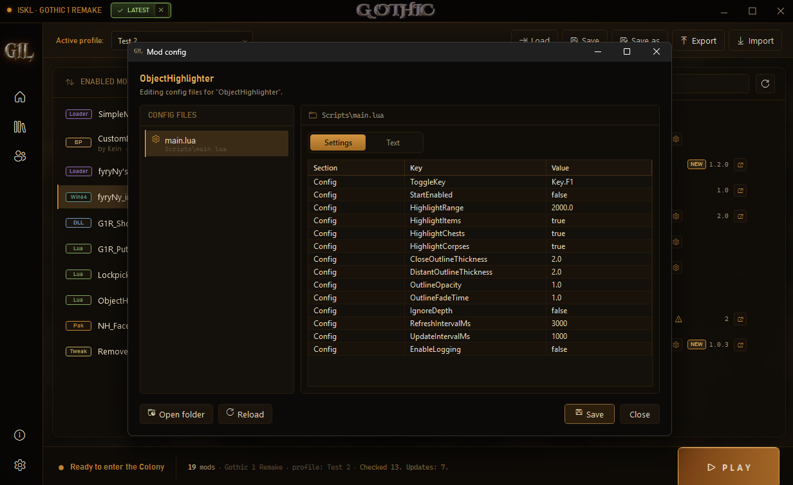
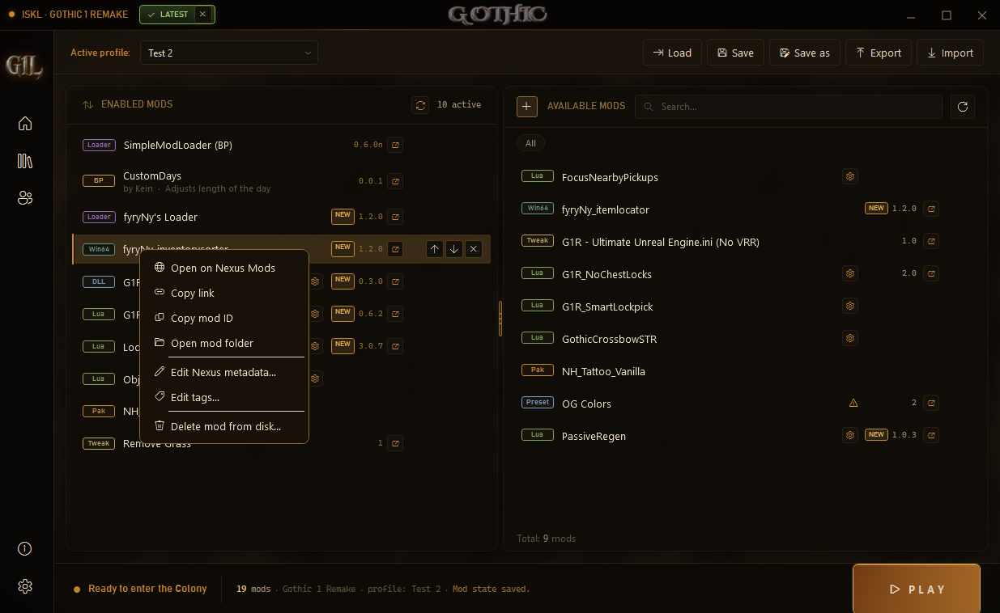
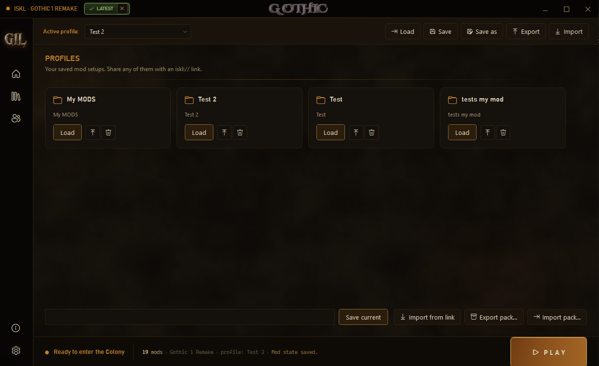
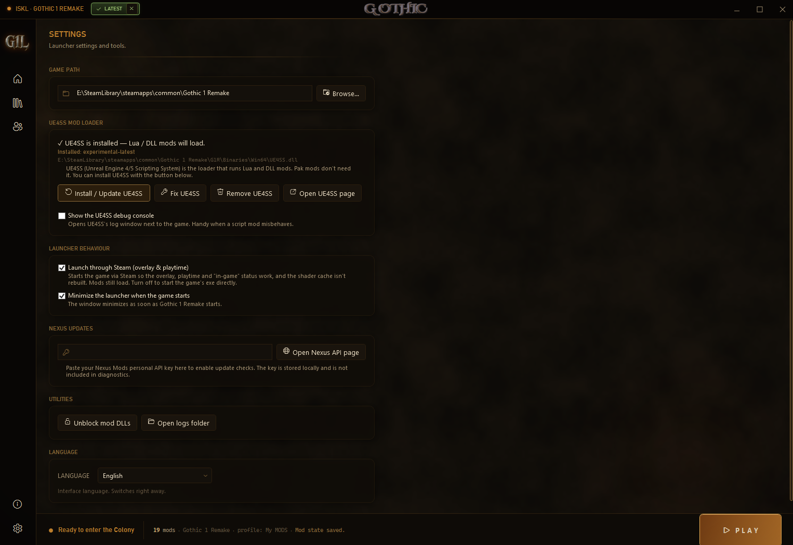

Lightweight, fast and fully portable. Drop a mod archive or folder onto the window — G1L detects what kind of mod it is and installs it exactly where the game expects it. No more digging through game folders by hand. Most managers only handle UE4SS or paks; G1L installs and manages every Gothic 1 Remake mod type — correctly.
Drop .zip / .7z / .rar / .pak or a mod folder onto the window — or pick several at once. G1L routes each to the right place.
UE4SS Lua & DLL, paks, BP plugins, movie replacements, Engine.ini tweaks, ReShade presets, fyryNy loader & plugins.
Save backups before launch, removable Engine.ini blocks, reversible toggles — nothing is ever silently destroyed.
A dark Gothic interface — stone texture, ember glow, built for the mood of the game.






G1L installs and manages them all — and puts each exactly where the engine looks for it.
.pak/.ucas/.utoc/.sig set; nothing is ever deleted.main.lua, rewriting only the value in place so the script never breaks. A raw text tab is always there too.Export your whole setup into one archive — the mod files, load order, enabled state and profile. A friend imports it with one click and gets your exact setup.
G1L reads each mod's latest file version on Nexus, so updates show up even when an author forgets to bump the version field. Paste a free personal API key once in Settings.
A title-bar chip shows LATEST when you're current, or UPDATE when a newer G1L is out. Both dismissible.
Save mod setups and share any of them with a single iskl:// link.
Tells you when a mod needs UE4SS, SimpleModLoader, fyryNy's Loader or ReShade — before it silently fails in game.
A yellow banner flags real problems: missing VC++ runtime, a broken UE4SS proxy, or a foreign DLL injector beside the game exe.
A backup before every launch, so a bad mod can't cost you your run.
About → Copy diagnostics grabs versions, paths, UE4SS state, mod list and log tail for bug reports.
Run ISKLLauncher.App.exe — the game is detected automatically.
If prompted, install UE4SS from Settings. Lua/DLL mods need it; pak / movie / tweak / preset mods do not.
Drag a mod archive, .pak, or folder onto Available mods — or click + to pick files.
Enable the mods you want and set the order if needed.
Click the config icon if a mod has editable settings.
Hit PLAY. Done.
| Mod type | Install location |
|---|---|
| UE4SS Lua / DLL mods | ...\G1R\Binaries\Win64\Mods\ |
| Pak mods | ...\G1R\Content\Paks\~mods\ |
| SimpleModLoader | ...\G1R\Content\Paks\ |
| BP plugins | ...\G1R\Mods\ |
| Movie replacements | ...\G1R\Content\Movies\ |
| Loose game-file replacements | ...\G1R\Images\, ...\G1R\Story\, ...\G1R\Textures\ |
| Engine.ini tweaks | %LOCALAPPDATA%\G1R\Saved\Config\Windows\Engine.ini |
| ReShade presets | ...\G1R\Binaries\Win64\ |
| fyryNy's Loader | ...\G1R\Binaries\Win64\ |
| fyryNy plugins | ...\G1R\Binaries\Win64\fyryNy_loader\ |
| PLuaModLoader child mods | ...\G1R\Binaries\Win64\Mods\PLuaModLoader\Scripts\Mods\ |
Built by one modder, kept alive by the community. Ask a question, leave a comment, or chip in to keep new features coming.
Questions, bug reports and feedback all live on the Nexus Mods comments tab — the fastest way to reach ISKL and other users.
Open comments on NexusG1L is free and always will be. A one-time donation helps fund development and future apps — no subscription, no strings.
Make a one-time donation